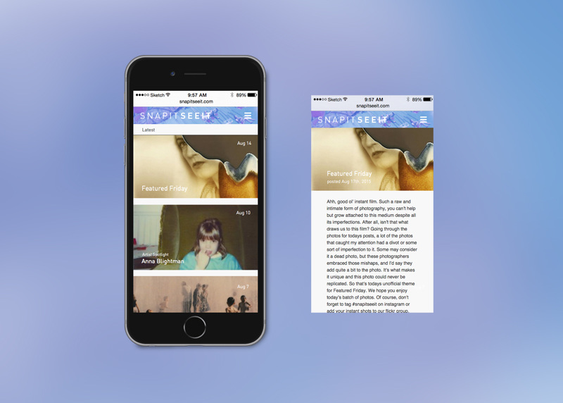
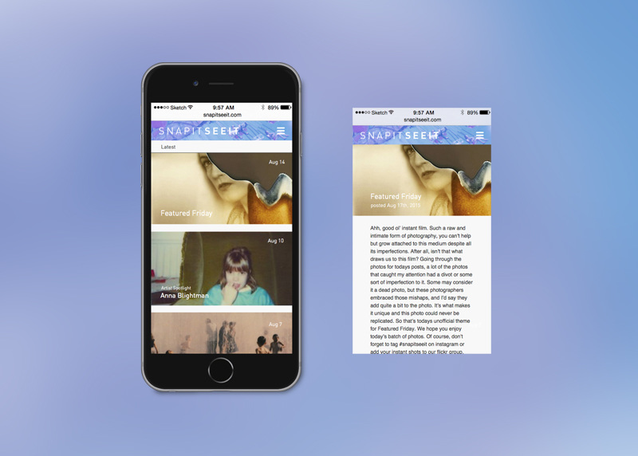

Snap It See It
Branding, Visual Design, UI/UX
Snap It See It was an instant film photography blog founded by Chris Kale and co-founded by Francisco Chavira. I was brought on board as a fellow photographer to help write blog content but also as the visual designer, which included tasks such as branding, UI/UX, and designing digital content to help promote the blog throughout various social media platforms.